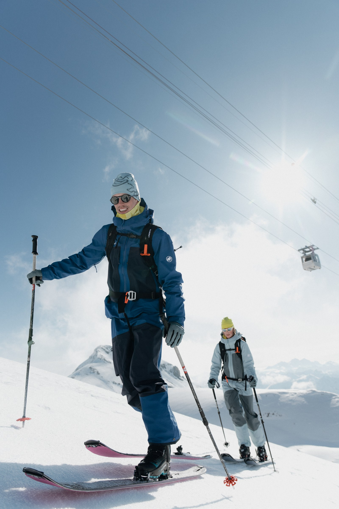

01 / STORYMAMMUT / SKITOURING
Radość
z drogi.

Skitouring dla nas to nie wyścig czy licytacja kto zrobi najbardziej dziką linię. Zależy nam, aby bardziej czerpać radości z drogi na szczyt, narciarskiego spotkania ze znajomymi czy po prostu zimowej aktywności.
Czasem warunki wymagają podejścia w mrozie, czasem wycofania się przed granią, ale odpowiedni sprzęt i odzież daje pełną swobodę działania w zróżnicowanych warunkach.
Linia Skintrack została stworzona z myślą o uniwersalności i komforcie, a nowa technologia Loopinsulation Active trzyma ciepło wtedy, gdy stoisz, i oddycha, gdy przyśpieszasz.